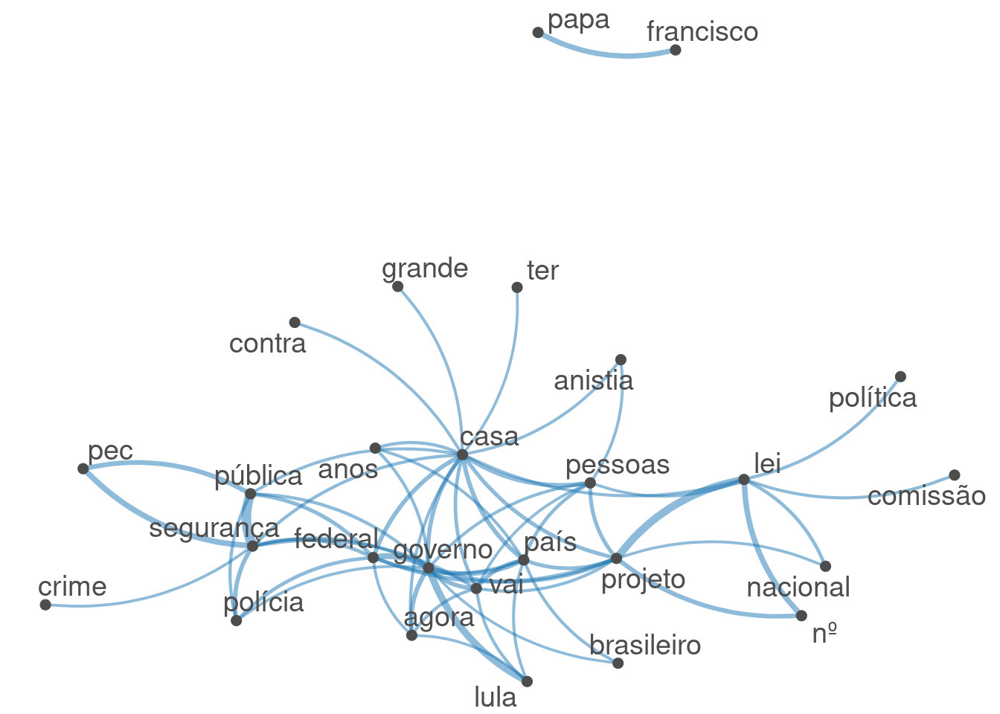
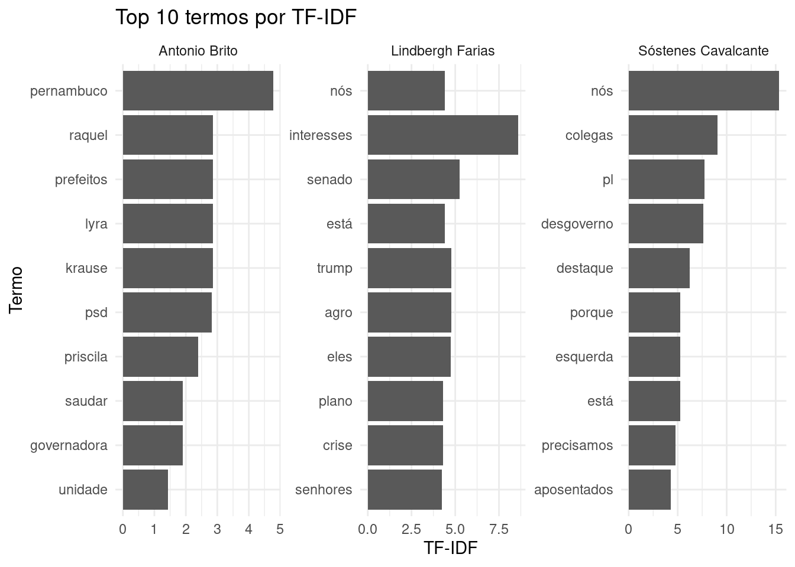
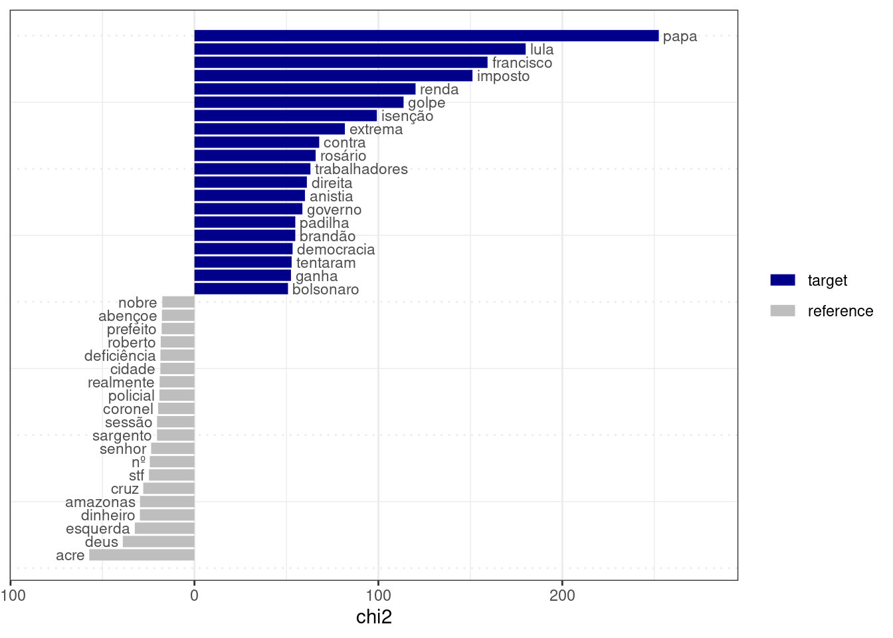

Rows: 1527 Columns: 21
── Column specification ────────────────────────────────────────────────────────
Delimiter: ","
chr (16): nome, uf, partido, uri, nome_civil, sexo, uf_nascimento, municipi...
dbl (1): id
lgl (1): data_falecimento
dttm (1): hora_inicio
date (2): data_nascimento, data_situacao
ℹ Use `spec()` to retrieve the full column specification for this data.
ℹ Specify the column types or set `show_col_types = FALSE` to quiet this message.
Dicionários são listas pré-definidas de palavras ou expressões associadas organizadas em uma hierarquia ou taxonomia.
Por exemplo, localizações geográficas podem ser organizadas em níveis para análise de mensões em diferentes níveis: setores, bairros, cidades, estados, países etc. Vejamos um exemplo de análise de mensões de regiões administrativas em planos de governo no DF:
dados_csv <-'ano,candidato,plano2014,Candidato A,"Vamos investir muito em Ceilândia e melhorar o transporte no Plano Piloto. Taguatinga também receberá atenção especial. O Jardim Botânico também deve receber melhorias."2018,Candidato B,"A saúde em Samambaia é a nossa prioridade. Ceilândia precisa de mais escolas e o Gama de mais hospitais. O novo bairro no Setor Tororó é a segunda prioridade."2022,Candidato C,"Nosso plano de governo foca no desenvolvimento do Gama e de Sobradinho. O Plano Piloto terá novas ciclovias e Taguatinga um novo viaduto."'dados <-read_csv(I(dados_csv)) |>mutate(doc_id =str_c(ano, candidato))
Rows: 3 Columns: 3
── Column specification ────────────────────────────────────────────────────────
Delimiter: ","
chr (2): candidato, plano
dbl (1): ano
ℹ Use `spec()` to retrieve the full column specification for this data.
ℹ Specify the column types or set `show_col_types = FALSE` to quiet this message.
Tokens consisting of 3 documents and 2 docvars.
2014Candidato A :
[1] "vamos" "investir" "muito" "em" "ceilândia"
[6] "e" "melhorar" "o" "transporte" "no"
[11] "plano" "piloto"
[ ... and 12 more ]
2018Candidato B :
[1] "a" "saúde" "em" "samambaia" "é"
[6] "a" "nossa" "prioridade" "ceilândia" "precisa"
[11] "de" "mais"
[ ... and 17 more ]
2022Candidato C :
[1] "nosso" "plano" "de" "governo"
[5] "foca" "no" "desenvolvimento" "do"
[9] "gama" "e" "de" "sobradinho"
[ ... and 11 more ]
Podemos montar um dicionário para representar diferentes regiões administrativas, incluíndo setores, diferentes grafias e, possívelmente, ruas, quadras, viadutos, locais comuns, etc.
dicionario_ras <-dictionary(list(ceilandia =c("ceilândia", "ceilandia"),plano_piloto =c("plano piloto", "brasília", "brasilia"),taguatinga =c("taguatinga"),samambaia =c("samambaia"),gama =c("gama"),sobradinho =c("sobradinho"),jardim_botanico =c("jardim botânico", "jardim botanico", "mangueiral", "tororó")))# Buscar os tokens que correspondem ao dicionáriotokens_ras <-tokens_lookup(tokens_planos, dictionary = dicionario_ras)# Criar a DFM para contabilizar as mençõesmatriz_contagem <-dfm(tokens_ras)matriz_contagem
Document-feature matrix of: 3 documents, 7 features (42.86% sparse) and 2 docvars.
features
docs ceilandia plano_piloto taguatinga samambaia gama sobradinho
2014Candidato A 1 1 1 0 0 0
2018Candidato B 1 0 0 1 1 0
2022Candidato C 0 1 1 0 1 1
features
docs jardim_botanico
2014Candidato A 1
2018Candidato B 1
2022Candidato C 0
Dicionários também podem conter múltiplos níveis de hierarquia. Por exemplo:
Existem vários dicionários disponíveis para análise de texto, como dicionários de sentimentos, dicionários de categorias temáticas, dicionários de palavras positivas e negativas, entre outros. Veremos mais exemplos nas próximas aulas.
A Câmara dos Deputados mantém um dicionário de temas para classificar os discursos em diferentes categorias temáticas. O dicionário é organizado em uma hierarquia de temas e subtemas, permitindo uma análise detalhada dos tópicos abordados nos discursos.
Na aula anterior, vimos como criar um corpus a partir de dados de texto e como separar o texto em palavras ou partes de palavras.
Por mais que palavras isoladas possuam significados interessantes, o significado de um texto é mais do que a soma das palavras que o compõem. Por exemplo, a expressão “teto de vidro” tem um significado diferente da soma dos significados de “teto”, “de” e “vidro”.
Os n-gramas consistem em sequências contíguas de “n” palavras. Por exemplo, na frase “eu tenho um sonho”:
feature frequency rank docfreq group
1 presidente_lula 296 1 164 all
2 governo_lula 135 2 90 all
3 luiz_lula 27 3 23 all
4 inácio_lula 27 3 23 all
5 lula_é 22 5 19 all
6 sr_lula 21 6 18 all
7 descondenado_lula 13 7 9 all
8 desgoverno_lula 12 8 11 all
9 lula_faz 11 9 9 all
10 lula_vai 9 10 8 all
11 lula_mandou 8 11 7 all
12 lula_hoje 7 12 5 all
13 lula_presidente 7 12 7 all
14 lula_agora 6 14 6 all
15 lula_voltou 6 14 6 all
16 povo_lula 6 14 6 all
17 acorda_lula 6 14 3 all
18 lula_então 5 18 5 all
19 é_lula 5 18 4 all
20 lula_sobre 4 20 4 all
21 brasileiro_lula 4 20 4 all
22 lula_nunca 4 20 3 all
23 lula_sempre 4 20 4 all
24 lula_porque 4 20 4 all
25 lula_fez 4 20 4 all
26 lula_sr 4 20 4 all
27 lula_aqui 4 20 4 all
28 lula_vamos 4 20 3 all
29 substituir_lula 4 20 2 all
30 celular_roubado 3 30 2 all
31 lula_dá 3 30 3 all
32 lula_morresse 3 30 3 all
33 lula_deu 3 30 3 all
34 brasil_lula 3 30 2 all
35 parabéns_lula 3 30 3 all
36 lula_conseguiu 3 30 3 all
37 lula_vem 3 30 3 all
38 lula_ainda 3 30 3 all
39 esperar_lula 3 30 3 all
40 dnit_lula 3 30 3 all
41 celular_anunciada 3 30 3 all
42 celular_parecem 3 30 3 all
43 justiça_lula 3 30 3 all
44 lula_onde 3 30 3 all
45 terceiro_lula 3 30 3 all
46 gestão_lula 3 30 3 all
47 lula_pode 3 30 3 all
48 lula_ter 3 30 3 all
49 reeleição_lula 3 30 3 all
50 lula_transforma 3 30 3 all
51 plenário_lula 3 30 1 all
52 lula_todos 3 30 3 all
53 lula_assume 3 30 3 all
54 próprio_lula 3 30 3 all
55 lula_atenção 3 30 3 all
56 lula_atrás 3 30 3 all
57 lula_contra 3 30 3 all
58 lula_apenas 3 30 3 all
59 lula_iria 3 30 1 all
60 instituto_lula 3 30 2 all
61 lula_continua 2 61 1 all
62 lula_vez 2 61 2 all
63 neste_lula 2 61 2 all
64 segurança_lula 2 61 2 all
65 bem_lula 2 61 2 all
66 lula_governo 2 61 2 all
67 lula_ganhou 2 61 2 all
68 lula_através 2 61 2 all
69 vai_lula 2 61 2 all
70 lula_olhando 2 61 2 all
71 lula_quer 2 61 2 all
72 lula_fazem 2 61 2 all
73 lula_colocar 2 61 2 all
74 lula_adora 2 61 2 all
75 vez_lula 2 61 2 all
76 deste_lula 2 61 2 all
77 celulares_apreendidos 2 61 1 all
78 lula_apostam 2 61 2 all
79 país_lula 2 61 2 all
80 lula_retire 2 61 2 all
81 lula_grande 2 61 2 all
82 lula_operação 2 61 2 all
83 lula_sim 2 61 2 all
84 lula_perderia 2 61 2 all
85 lula_lá 2 61 2 all
86 pública_lula 2 61 2 all
87 celular_porque 2 61 1 all
88 celular_hoje 2 61 2 all
89 celular_é 2 61 1 all
90 porque_lula 2 61 2 all
91 aparelhos_celulares 2 61 2 all
92 lula_lula 2 61 2 all
93 elegeu_lula 2 61 2 all
94 lula_fazer 2 61 2 all
95 lula_nenhum 2 61 2 all
96 lula_saiu 2 61 2 all
97 lula_gosta 2 61 2 all
98 jair_lula 2 61 2 all
99 bolsonaro_lula 2 61 2 all
100 lula_ganha 2 61 2 all
padding = TRUE faz com que o tokens_remove deixe espaços vazios no lugar de stopwords. Isso é interessante para manter a adjacência das palavras.
3.2.2 Matriz de Co-orrência de Características (Feature Co-occurrence Matrix, FCM)
Uma FCM é uma matriz que representa a frequência com que diferentes características (palavras, n-gramas, etc) coocorrem em um conjunto de documentos.
Acmatriz possui palavras como linhas e colunas, e cada célula contém a contagem de vezes que as palavras correspondentes coocorrem em um contexto específico (por exemplo, em um mesmo documento ou em uma janela de palavras).
FCMs podem ser utilizadas para construção de redes semânticas, onde as palavras são representadas como nós e as coocorrências como arestas.
palavras_com_mais_coocorrencia <- fcm_discursos |>colSums() |># somar colunassort(decreasing =TRUE) |># ordenar em ordem decrescentehead(50) |># pegar as 50 palavras com mais coocorrênciasnames() # pegar os nomes das palavras (colunas)fcm_discursos |>fcm_select(palavras_com_mais_coocorrencia) |>textplot_network(min_freq =0.95, edge_alpha =0.5)

Isso pode ajudar a identificar clusters de palavras relacionadas e a visualizar as relações entre diferentes termos em um corpus.
3.3 Collocations
Collocations são combinações de palavras que coocorrem com mais frequência do que seria esperado por acaso. Por exemplo, “distrito federal” é uma collocation comum em português, enquanto “distrito superior” não é.
Intuição:
Em um corpus com 1000 palavras
“distrito” aparece 50 vezes
“federal” aparece 30 vezes
“distrito federal” aparece 20 vezes
A frequência esperada de “distrito federal” por acaso seria (50/1000) * (30/1000) = 1.5 vezes. Portanto, “distrito federal” é uma collocation, pois ocorre muito mais frequentemente do que o esperado por acaso.
collocation count count_nested length lambda z
1 povo brasileiro 317 0 2 7.094949 74.87908
2 segurança pública 341 0 2 7.951203 73.03078
3 presidente lula 287 0 2 5.740204 69.40006
4 desta casa 336 0 2 6.789815 68.69073
5 nesta casa 264 0 2 6.369823 63.98644
6 neste momento 170 0 2 6.687064 60.17856
7 rio grande 174 0 2 6.386154 59.20216
8 lei nº 186 0 2 7.194025 58.26029
9 governo federal 203 0 2 4.866946 56.99339
10 muitas vezes 142 0 2 8.106255 55.50786
11 mil reais 137 0 2 6.296415 54.01904
12 polícia federal 153 0 2 5.842485 53.78756
13 congresso nacional 157 0 2 7.822798 51.41192
14 papa francisco 185 0 2 10.135354 50.74096
15 comunicação desta 114 0 2 7.346900 49.01191
16 políticas públicas 115 0 2 9.092849 48.53168
17 quero dizer 134 0 2 4.997685 48.17867
18 supremo tribunal 133 0 2 9.824673 47.41521
19 além disso 83 0 2 7.357538 46.72047
20 meio ambiente 103 0 2 8.443401 46.38697
21 governo lula 134 0 2 4.676415 46.35016
22 cada vez 95 0 2 5.774423 45.66492
23 todo mundo 97 0 2 5.648577 45.61196
24 tribunal federal 129 0 2 6.920726 45.14859
25 senhor presidente 113 0 2 5.929870 44.58059
26 extrema direita 77 0 2 8.661933 43.40683
27 polícia militar 72 0 2 7.055629 41.95126
28 salário mínimo 77 0 2 9.513562 41.60995
29 ano passado 64 0 2 7.736294 41.58084
30 população brasileira 71 0 2 6.118490 41.54126
31 deputado glauber 205 0 2 7.872754 41.18085
32 presidente hugo 145 0 2 7.229659 40.87213
33 pode ser 102 0 2 4.621680 40.46531
34 colegas parlamentares 62 0 2 6.544027 40.29669
35 deve ser 89 0 2 5.729375 40.13056
36 boa tarde 58 0 2 8.403893 39.26370
37 poder judiciário 56 0 2 6.474898 38.53665
38 vai ser 109 0 2 4.068184 38.22506
39 15 bilhões 56 0 2 7.477119 38.17092
40 espírito santo 76 0 2 10.408624 38.09059
41 2 anos 67 0 2 6.128967 38.05212
42 5 mil 58 0 2 7.112991 38.01413
43 falar sobre 71 0 2 5.289190 37.99832
44 6 bilhões 53 0 2 7.124557 37.97072
45 precisa ser 83 0 2 4.849300 37.64630
46 deste país 78 0 2 5.036228 37.56653
47 ministro alexandre 57 0 2 7.123284 37.47020
48 tão importante 62 0 2 5.706505 37.18533
49 polícia civil 53 0 2 6.718288 36.82482
50 glauber braga 111 0 2 10.522887 36.13865
51 é importante 175 0 2 3.266139 36.10948
52 neste país 81 0 2 4.445070 35.66245
53 redes sociais 66 0 2 9.859315 35.59447
54 senhores deputados 56 0 2 5.806192 35.50307
55 demais órgãos 39 0 2 7.711377 35.16803
56 frente parlamentar 42 0 2 6.888598 34.93247
57 sistema único 45 0 2 8.415360 34.80622
58 senhores parlamentares 46 0 2 6.192452 34.78971
59 quero agradecer 73 0 2 6.588346 34.66563
60 desenvolvimento sustentável 38 0 2 7.657122 33.44210
61 dinheiro público 45 0 2 5.780509 33.43958
62 sociedade brasileira 45 0 2 5.902238 33.40299
63 ministério público 41 0 2 6.155793 33.24163
64 1 ano 44 0 2 5.867420 33.18068
65 política pública 58 0 2 4.858917 33.01597
66 banco central 42 0 2 10.042825 32.87285
67 lei aldir 63 0 2 7.321572 32.70117
68 justiça social 47 0 2 5.456960 32.67941
69 presidente bolsonaro 71 0 2 4.314372 32.53561
70 ter sido 47 0 2 5.662171 32.44850
71 bom dia 52 0 2 5.330855 32.44725
72 colegas deputados 48 0 2 5.478509 32.41811
73 povos indígenas 42 0 2 9.676011 32.41243
74 jair bolsonaro 50 0 2 7.589680 32.30223
75 dia mundial 49 0 2 6.439371 32.29408
76 quero parabenizar 69 0 2 6.886609 32.05209
77 dia 8 47 0 2 5.571043 31.90361
78 gilberto silva 36 0 2 9.030900 31.83257
79 desenvolvimento econômico 33 0 2 7.448857 31.66985
80 boa noite 32 0 2 7.733865 31.45592
81 governo bolsonaro 64 0 2 4.324421 31.23625
82 igreja católica 38 0 2 9.468493 30.94283
83 nesse sentido 30 0 2 6.893765 30.77128
84 tribuna hoje 51 0 2 4.885489 30.71107
85 estados unidos 136 0 2 10.558781 30.67852
86 deus abençoe 34 0 2 8.219282 30.66900
87 poderia deixar 29 0 2 7.079134 30.54690
88 deputado federal 84 0 2 3.560410 30.33904
89 outro lado 31 0 2 6.242143 29.85701
90 primeiro lugar 27 0 2 6.981984 29.75911
91 seguinte discurso 42 0 2 9.225202 29.75177
92 1 milhão 40 0 2 8.642871 29.74764
93 constituição federal 46 0 2 5.113845 29.57232
94 tantos outros 31 0 2 7.302873 29.53508
95 poder público 37 0 2 5.450337 29.53091
96 democracia brasileira 35 0 2 5.783407 29.49473
97 é preciso 188 0 2 6.121146 29.45537
98 conscientização sobre 43 0 2 6.785642 29.33319
99 deveria ser 46 0 2 5.311634 29.10275
100 presidente charles 64 0 2 6.857871 29.09785
Além das collocations, a tabela gerada retorna:
count: a contagem de ocorrências
count_nested: a contagem de ocorrências com tamanho menor
length: o tamanho da colocations em número de palavras
lambda: indica o quão fortemente as palavras da colocação estão relacionadas
z: estatística do valor lambda, corrigido de acordo com o erro padrão (quanto maior z, maior a confiança em lambda)
3.4 TF-IDF
Até agora, falamos sobre a frequência de palavras em um texto (TF, do inglês term-frequency).
Em certas análises, é importante considerar o quão comum ou rara uma palavra é em um corpus.
Por exemplo, a palavra “presidente” é mencionada por todos os discursos. Porém, palavras como “macroeconomia” e “transfobia” são particulares de determinados partidos e ideologias.
TF-IDF (Term Frequency-Inverse Document Frequency) é uma métrica de importância de termos que considera:
TF (Term Frequency): A frequência de uma palavra (ou n-grama) em um documento.
Por exemplo, se a palavra “sonho” aparece 5 vezes em um documento com 100 palavras, a TF seria 5/100 = 0.05.
IDF (Inverse Document Frequency): Uma medida de quão comum ou rara uma palavra é em um corpus.
É calculada como \(log(N/n)\), onde \(N\) é o número total de documentos e \(n\) é o número de documentos que contêm a palavra.
Por exemplo, se temos 1000 documentos e a palavra “sonho” aparece em 100 deles, a IDF seria log(1000/100) = log(10) ≈ 1.
O TF-IDF é calculado multiplicando a TF pela IDF. No exemplo acima, o TF-IDF para a palavra “sonho” seria 0.05 * 1 = 0.05.
3.4.1 Exemplo
Vamos utilizar TF-IDF para comparar discursos de três parlamentares: Sóstenes Cavalcante (PL), Lindbergh Farias (PT) e Antonio Brito (PSD).
Document-feature matrix of: 3 documents, 2,434 features (56.51% sparse) and 15 docvars.
features
docs o sr bloco psd ba inicialmente eu queria
Antonio Brito 0 0 0 2.8174601 0.3521825 0.1760913 0 0
Lindbergh Farias 0 0 0 0 0 0 0 0
Sóstenes Cavalcante 0 0 0 0.3521825 0.3521825 0.7043650 0 0
features
docs saudar v.exa
Antonio Brito 1.908485 0
Lindbergh Farias 0 0
Sóstenes Cavalcante 0 0
[ reached max_nfeat ... 2,424 more features ]
Para facilitar a análise, vamos transformar a DFM em tabela:
df_tfidf <- tfidf_discursos |>convert(to ="data.frame") |># converter em tabelapivot_longer( # transformar colunas (palavras) em linhascols =-doc_id,names_to ="termo",values_to ="tfidf" )head(df_tfidf)
# A tibble: 6 × 3
doc_id termo tfidf
<chr> <chr> <dbl>
1 Antonio Brito o 0
2 Antonio Brito sr 0
3 Antonio Brito bloco 0
4 Antonio Brito psd 2.82
5 Antonio Brito ba 0.352
6 Antonio Brito inicialmente 0.176
Vamos extrair os 10 termos com maior TF-IDF para cada deputado:
df_tfidf |>group_by(doc_id) |>slice_max(tfidf, n =10)
# A tibble: 38 × 3
# Groups: doc_id [3]
doc_id termo tfidf
<chr> <chr> <dbl>
1 Antonio Brito pernambuco 4.77
2 Antonio Brito krause 2.86
3 Antonio Brito prefeitos 2.86
4 Antonio Brito raquel 2.86
5 Antonio Brito lyra 2.86
6 Antonio Brito psd 2.82
7 Antonio Brito priscila 2.39
8 Antonio Brito saudar 1.91
9 Antonio Brito governadora 1.91
10 Antonio Brito unidade 1.43
# ℹ 28 more rows
E plotar os termos mais importantes para cada deputado em um gráfico de barras:
df_tfidf |>group_by(doc_id) |>slice_max(tfidf, n =10, with_ties = F) |>ggplot(aes(x =reorder(termo, tfidf), y = tfidf)) +geom_bar(stat ="identity") +facet_wrap(~ doc_id, scales ="free") +coord_flip() +labs(x ="Termo", y ="TF-IDF", title ="Top 10 termos por TF-IDF") +theme_minimal()

3.5 Diversidade léxica (lexical diversity)
A diversidade léxica é uma medida da variedade de palavras utilizadas em um texto.
Uma medida comum de diversidade léxica é o Type-Token Ratio (TTR), que é a razão entre o número de tipos (palavras únicas) e o número de tokens (total de palavras) em um texto.
corpus_discursos |>tokens() |>textstat_lexdiv() |># calcula a diversidade léxicaarrange(desc(TTR)) |># ordena por Type-Token Ratio (TTR) em ordem decrescentehead(20)
O TTR é uma medida simples, mas pode ser influenciada pelo tamanho do texto. Textos mais longos tendem a ter um TTR mais baixo, pois é mais provável que palavras sejam repetidas.
Existem outras métricas de diversidade léxica que tentam corrigir essa influência do tamanho do texto, como o MTLD (Measure of Textual Lexical Diversity).
Assim como a diversidade léxica, a leiturabilidade é uma medida da complexidade de um texto. Existem várias fórmulas para calcular a leiturabilidade, como o Índice de Flesch, o Índice de Gunning Fog, o Índice de Coleman-Liau, entre outras.
O Índice de Flesch calcula um valor de 0 a 100 para a facilidade de leitura. A métrica considera dois fatores:
o número de palavras por frase
o número de sílabas por palavra
Na biblioteca quanteda, utilizamos a função textstat_readability, que por padrão retorna o Índice de Flesch:
Métricas de leiturabilidade podem ser úteis para comparar a complexidade de discursos de diferentes parlamentares, partidos ou temas. Por exemplo, podemos comparar a leiturabilidade de discursos sobre economia e saúde para verificar se há diferenças na complexidade dos textos.
Em estudos quantitativos, palavras-chaves (keyness) do texto são aquelas quais a frequência é significativamente diferente entre grupos de documentos.
Por exemplo, quais palavras são mais associadas a discursos do PT em comparação com outros partidos?
Primeiro, separamos os discursos em grupos: discursos do PT (alvo) e discursos de outros partidos (referência).
Em seguida, a função textstat_keyness analisa as frequências de uma DFM em cada grupo e compara, utilizando um teste estatístico, se a frequência é maior no grupo alvo. Quanto maior a certeza do teste, maior a tendência de palavra-chave.
partidos <-docvars(corpus_discursos) |>pull(partido)keyness_pt <- corpus_discursos |>tokens() |>tokens_tolower() |>tokens_remove(c(stopwords("portuguese"), partidos)) |>dfm() |>textstat_keyness(target = partidos =='PT')keyness_pt |>head(n =20)
Podemos plotar as palavras-chave com maiores e menores keyness com a função textplot_keyness:
keyness_pt |>textplot_keyness(labelsize =3)

3.8 Para saber mais
Leia mais sobre TF-IDF e N-gramas nos capítulos 3 e 4 do livro Text Mining with R (Silge and Robinson 2017).
Veja como collocations são utilizadas para estudos sociais no artigos:
A useful methodological synergy? Combining critical discourse analysis and corpus linguistics to examine discourses of refugees and asylum seekers in the UK press de Baker et al. (2008).
Indicador de similaridade do discurso parlamentar: análise do comportamento das coalizões partidárias de Schwartz (2022).
3.9 Atividade prática
Analise os discursos vistos em aula utilizando:
Crie um dicionário de termos com temas de seu interesse e analise a frequência nos discursos da câmara
Busque collocations com 3 ou 4 palavras
TF-IDF, analizando as diferenças entre um partido de direita e um partido de esquerda
Compare palavras-chave (keyness) de diferentes gêneros
Baker, Paul, Costas Gabrielatos, Majid KhosraviNik, Michał Krzyżanowski, Tony McEnery, and Ruth Wodak. 2008. “A Useful Methodological Synergy? Combining Critical Discourse Analysis and Corpus Linguistics to Examine Discourses of Refugees and Asylum Seekers in the UK Press.”Discourse & Society 19 (3): 273–306. https://doi.org/10.1177/0957926508088962.
Schwartz, Fabiano Peruzzo. 2022. “INDICADOR DE SIMILARIDADE DO DISCURSO PARLAMENTAR: ANÁLISE DO COMPORTAMENTO DAS COALIZÕES PARTIDÁRIAS.”E-Legis - Revista Eletrônica Do Programa de Pós-Graduação Da Câmara Dos Deputados 15 (37): 1–20. https://doi.org/10.51206/elegis.v15i37.715.
Silge, Julia, and David Robinson. 2017. Text mining with R: a tidy approach. Beijing, China: O’Reilly.